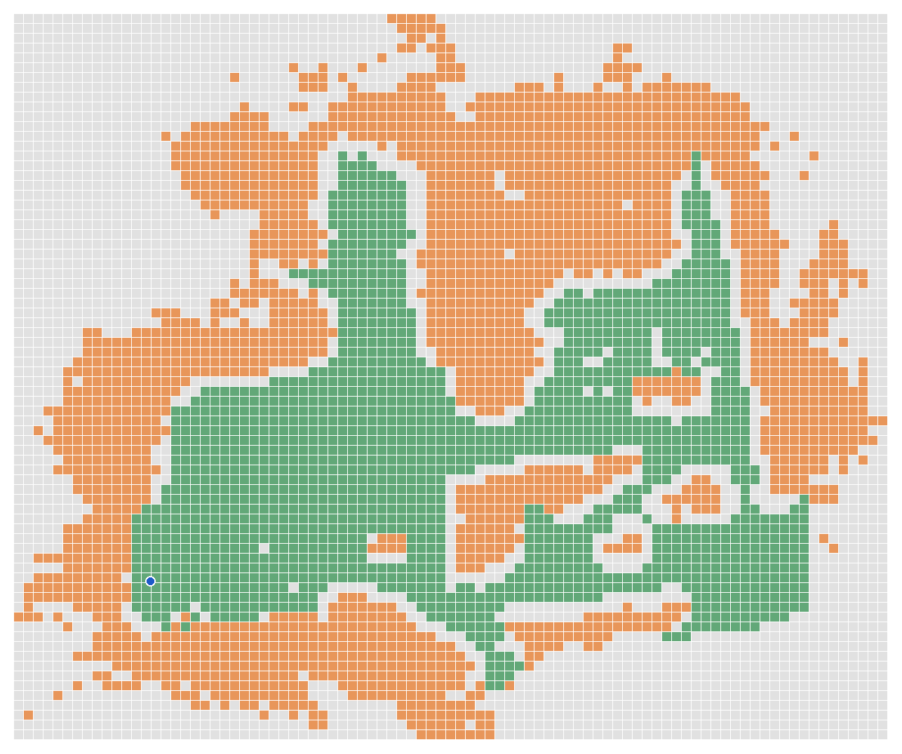

NammaSpace Technical Report
IIT Techfest 2026, NammaSpace challenge · 28 October 2026
1. Summary
The goal is a walkable digital twin: a copy of a real room that looks real and that a person can walk through in a browser, without hand modelling and without a depth scanner. The input is one ordinary phone video of a slow walk through the room. The output is a static website of a few megabytes.
The system has two parts that are kept deliberately separate. A 3D Gaussian splat [1] draws the room. A collision grid built from the scan decides where the viewer can stand. A splat is made of translucent blobs and has no solid surfaces, so appearance and physics need separate representations.

2. Capture and frame selection
A phone video is filmed landscape at a steady height, held about at chest or eye level and tilted slightly down, with focus and exposure locked, walking slowly (about half a metre per second) along one continuous path that ends where it started. Raising the phone toward the ceiling in a second lap bent an early capture, so the rule is one lap at one height.
A video has many more frames than a reconstruction needs, and some are blurred by hand shake. The frame picker scores every frame for sharpness using the variance of its Laplacian on a reduced copy, divides the video into half-second windows, and keeps the sharpest frame of each window. Frames keep their original colour: an early version measured sharpness on a greyscale copy and accidentally saved that grey copy, which produced grey scenes, so the pipeline now checks the colour of the frames and refuses to continue if they are grey. Frames are scaled to at most 1920 pixels wide.
3. Camera poses
COLMAP [2] runs feature extraction, matching and mapping. Because the input is a video, each frame is matched with its neighbours in time, which suits sequential data. The mapper solves every camera position, the lens model and a sparse set of 3D points together. A health check then counts the frames that were placed, keeps the largest model, warns when fewer than 80% of the frames are placed or when the walk breaks into two large pieces, and stops below 40%. Poses are final once solved and are never re-run.
COLMAP is the slowest step on a laptop. For the Room scene (613 frames) preparation took about 21 minutes. A 7-minute capture with 883 frames took 87 minutes, mostly bundle adjustment on the CPU.
4. Floor, scale and the world frame
COLMAP's coordinates are arbitrary: they have no up direction and no units. A video also cannot measure gravity, so the floor is found from the data. A plane is fitted to the lowest points under the walking path, which gives the up direction and sets the floor to height zero. The scale is then set by assuming the phone was 1.4 m above the floor. This is an assumption we have not checked with a tape measure, so metre figures are approximate. The result is a recipe, world.json, with a scale, a rotation and a translation that maps COLMAP coordinates into a shared world frame in metres with Y up.
Sanity checks print where known objects land (a bed surface should be 0.45 to 0.55 m and a ceiling 2.5 to 3.1 m), and the script stops if the camera up directions disagree, which happens when the phone was not held upright. The fixed phone height is an assumption, not a measurement, and is listed under limitations.
5. Gaussian splat training
Training uses nerfstudio [3] with the splatfacto method and the gsplat library [4], for 30,000 steps at full image size. Every frame is used for training except those held out for scoring. The images are cached on the CPU automatically when there are more than 500 frames, which does not change quality. The Room run took 819 s on an NVIDIA RTX PRO 6000 Blackwell GPU with a peak of 16,251 MiB of GPU memory measured over the whole card, so about 16 GB or more is a sensible requirement at full 1080p. We did not train on a smaller card.
The export is a PLY with one row per Gaussian: position, colour, opacity, three scales stored as logarithms and a rotation. The Room scene has 541,337 Gaussians after 7,444 almost-transparent ones were dropped.
6. Alignment, cleaning and compression
nerfstudio re-centres, rotates and rescales a scene for training and records it in dataparser_transforms.json. The finishing step reverses that transform and then applies world.json, so the splat lands in the same metric frame as the collision grid, with positions, rotations and sizes all transformed. It then checks the alignment by measuring how far the Gaussians are from the real COLMAP points, and it stops rather than publish a scene whose median distance exceeds 0.4 m.
Cleaning removes almost transparent Gaussians, absurdly large ones, and floaters more than 1.2 m from anything the cameras saw. Glossy floors and wardrobes cannot be modelled as mirrors, so training invents ghost copies of reflected objects below the floor; everything more than 12 cm under the floor, and anything above 3.3 m, is deleted. The remaining Gaussians are sorted most-important-first by opacity times size, which means a file prefix is always the best subset. They are packed into our own .qsplat format, 17 bytes per Gaussian (positions as three 16-bit values, scales, colour with opacity and rotation as 8-bit values) and gzip-compressed. The Room splat is about 8 MB.
7. Collision
The collision grid has 10 cm cells. A cell is occupied when at least three points lie in it between 0.15 m and 1.7 m above the floor, which captures walls and furniture. Free space comes from the cells near where the camera walked and floor cells seen near that path, and anything within 20 cm of the walked path cannot be an obstacle. A 25 cm margin, the player's radius, is added around obstacles to give the blocked grid, and unreachable pockets are blocked.
The trained splat is a second, independent source of evidence. A second map is built from the cleaned splat, the two are combined, only the connected region that contains the walked path is kept, and a cell also stays blocked when the splat map sees a solid obstacle there. The step stops if the walked path or the start point would end up blocked. On the Room scene this removed 17 of 430 walkable cells (to 413) while the walked path stayed 100% walkable.


8. The web viewer
The viewer is plain static files with no build step. It decodes the .qsplat and draws the Gaussians with our own WebGL2 renderer, sorting them back to front every moment so translucent blobs blend correctly. Movement is first-person with W A S D, mouse look, run and jump. Every frame it tries to move the viewer and, if the target cell is blocked, slides along the wall instead. A live map drawn from the collision grid shows walkable floor, obstacles, the position and the viewing cone. Buttons set how many splats are drawn (250k, 500k or all), which works because the file is sorted best-first.

Frame rate depends on how many Gaussians are drawn and on which GPU the browser actually uses. On a laptop with both an integrated and a discrete GPU, Windows may run the browser on the integrated one. We saw 24 to 38 fps with all splats on the integrated GPU and 170 to 180 fps on the RTX 3060 laptop GPU. These are informal single-machine observations with all splats drawn, not a standardized benchmark: browser version, resolution, test length and camera path were not controlled, so they do not guarantee the same speed on other hardware. A web page cannot choose the GPU, so the viewer measures its frame rate about 2.5 seconds after loading and, below 35 fps, steps down through lower splat counts and render resolutions and tells the user.
9. Results
Scores are measured on held-out frames: for the hallway run every eighth frame was held out (109 of 868). Settings and timings for each scene are in its training report in the repository.
| Scene | Frames | Gaussians | PSNR | SSIM | LPIPS | Training | Walkable floor |
|---|---|---|---|---|---|---|---|
| Room | 613 | 541,337 | 27.14 dB | 0.913 | 0.191 | 819 s | 4.3 m² |
| Hallway and Bedroom (v2) | 868 | 650,654 | 26.46 dB | 0.874 | 0.244 | 995 s | 15.8 m² |
| Early Bedroom | not recorded | 700,000 shown | – | – | – | – | 8.1 m² |
The walkable floor is the area your body centre can reach after the 25 cm margin, so it is smaller than the room. Within the hallway family, a first run scored 23.56 dB with 709 frames and the improved run 26.46 dB with 868 frames; the Room is a different scene, so that comparison shows pipeline progress rather than a like-for-like gain. The Early Bedroom was captured before the evaluation step existed.
10. Problems we met and how we handled them
The scenes are a progression, and each one exposed a fault that changed the pipeline. Some faults are fixed and some are only reduced. Both kinds are listed.
Capture
- Early Bedroom, ceiling not captured. The walk was at eye level and never looked up, and a plain white ceiling gives COLMAP few points to lock onto, so the ceiling rendered black. This was a capture fault, not a rendering fault.
- First hallway and bedroom capture, doubled walls. The video included a second lap with the phone raised toward the ceiling. COLMAP placed the same wall in two slightly different places, which gave bent doors and a double window. We now film one continuous lap at one height.
- Room, ceiling and corners. To improve coverage of the ceiling and corners we added a separate set of about 25 still photos. They were taken with the same phone and lens as the video, in landscape, at the same resolution and proportions, from the same height and in the same lighting, so that COLMAP can match each photo to the video frames. The pipeline reads them from their own folder and adds them to the frame set. The ceiling is still the weakest part of every scene.
- Hallway and Bedroom, v2 and v3. The ceiling is still weak, and glossy floors and wardrobes reflect the lights. A splat can only imitate a reflection with ghost copies, so we remove the ones that fall below the floor. For v3 we filmed a separate 4K ceiling pass, but it is not merged and v3 is not published, because merging it has to be tested as its own experiment.
Software
- Grey frames. A blur filter saved a greyscale copy of each frame, so COLMAP and the first splat were grey. Both steps now check that the frames really have colour and stop if they do not.
- A fake splat. An early test converted raw COLMAP points straight into a splat file. That is not trained, so it was removed and the rule is that a splat always comes from real training.
- Two scenes on one website. Two captures on one site do not belong together. One video is now one scene and one website.
- Silent no-ops. The half-size image folder did nothing, the training profiles only ran the plain method, and a wrong header meant the compressed splat file never opened. Each was fixed, and the profile fix has only been syntax-checked.
- Viewer faults. Pressing 2 on a scene without a mesh gave a black screen, a late depth-sort result occasionally drew a scrambled frame, and collision first worked only near the walked path. We fixed the first two and now combine the camera path with a map built from the splat itself for the third.
Compute and GPU
- Laptop. A 6 GB RTX 3060 with about 14 GB of RAM can run COLMAP but not splat training. A training crash we first blamed on the graphics driver was the laptop running out of RAM, so training now runs only on a remote GPU machine. COLMAP itself is slow on a laptop, 87 minutes for the 883-frame capture, mostly on the CPU. The Room, with 613 sharpest-frame picks, took about 21 minutes.
- Remote GPU. The first remote machine was replaced by one with an RTX PRO 6000 Blackwell card. That card needs CUDA 12.8 builds, so the CUDA 12.1 setup in the nerfstudio repository does not work on it, and we built a matching environment. Newer PyTorch also needs a loading flag for nerfstudio 1.1.5. The machine is shared, and another user's job once slowed a run to 235 s instead of 123 s, so each report records what else was running. The system may stop very long jobs under memory pressure, and a user-service workaround is written down but has not been needed or tested. Files move between machines through a shared drive.
- Browser frame rate. On a laptop with two GPUs the browser may run on the integrated one, which gave 24 to 38 fps against 170 to 180 fps on the RTX 3060. A web page cannot choose the GPU, so the viewer measures its frame rate and lowers detail with a message when it is slow.
- Not yet verified. The one-machine training path has not been run on a separate clean GPU machine.
11. Reproducibility
The repository contains the three scenes, the pipeline and a small test sample. One script runs everything on one machine.
python run_all.py --check # list missing requirements python run_all.py --test # bundled sample, short training python run_all.py --video my_walkthrough.mp4
Requirements are Linux or WSL2, an NVIDIA GPU with 16 GB or more, 20 GB of free disk, ffmpeg, COLMAP 3.9 or newer and nerfstudio with gsplat. Tested so far: the preparation and finishing steps on Windows, training on Linux in our two-machine setup, and the requirement check and finishing step on the bundled sample. The one-machine training run has not yet been tried on a separate clean GPU machine.
12. Limitations and next steps
- Ceilings and unseen areas are rough or dark because the camera barely saw them.
- Collision is two-dimensional. It stops the viewer at walls and furniture but does not model stairs or overhangs.
- Scale is assumed from a 1.4 m phone height, not measured from a reference object, so real-world dimensions are approximate.
- Collision is derived, not surveyed. The grid comes automatically from the camera path, sparse points and splat evidence. It has not been validated against measured walls, furniture or doorways, so it is a believable walking boundary, not surveyed geometry.
- Quality depends on the capture. A fast or non-continuous walk reduces the number of frames COLMAP can place.
- Training needs a large GPU (about 16 GB), which is why our own setup trains on a separate machine.
Planned next: points of interest placed on the same grid the live map reads, a navigation method between them, an AI model to make reconstruction faster and more robust, a way to fill areas the camera never saw, an augmented reality view, and stronger collision where the two sources of evidence disagree.
References
- B. Kerbl, G. Kopanas, T. Leimkühler, G. Drettakis. 3D Gaussian Splatting for Real-Time Radiance Field Rendering. ACM Transactions on Graphics (SIGGRAPH), 2023.
- J. L. Schönberger, J.-M. Frahm. Structure-from-Motion Revisited. CVPR, 2016.
- M. Tancik et al. Nerfstudio: A Modular Framework for Neural Radiance Field Development. ACM SIGGRAPH, 2023.
- V. Ye et al. gsplat: An Open-Source Library for Gaussian Splatting. arXiv:2409.06765, 2024.